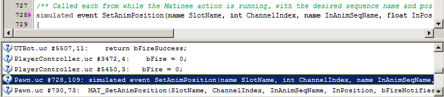

UDN
Search public documentation:
UnCodeXCH
English Translation
日本語訳
한국어
Interested in the Unreal Engine?
Visit the Unreal Technology site.
Looking for jobs and company info?
Check out the Epic games site.
Questions about support via UDN?
Contact the UDN Staff
日本語訳
한국어
Interested in the Unreal Engine?
Visit the Unreal Technology site.
Looking for jobs and company info?
Check out the Epic games site.
Questions about support via UDN?
Contact the UDN Staff
UnCodeX
概述
安装
- 从它的项目页面获得最新版本的UnCodeX 。
- 执行安装包并遵循以下步骤。
- 当您第一次启动UnCodeX时将会提示您改变设置。按下“yes(是)”来打开程序设置窗口。
- 唯一需要配置的是''Source Paths(源码路径)''设置。
- 按下''add(添加)''按钮，并选择包含您需要的UnrealScript代码的文件夹。
- 对于UDK来说，您应该导航到
c:\UDK\Development\Src。 - 通过点击“OK(确定)”关闭设置窗口。
- UnCodeX 现在将提示您扫描并分析源码。
- 按下“yes(是)”来进行扫描及分析。
- 根据代码文件量的多少及您的计算机的速度的不同，这个过程可能会花费一些时间。
- 当发生结构性的修改时，比如添加新的包，您应该重新构建并分析树。这可以通过菜单Tree(树)>Rebuild(重新构建)&；Analyse(分析)(Ctrl+B)来完成。
- 现在便可以使用UnCodeX了。
应用
主窗口
以下是默认配置情况下主窗口的屏幕截图。
- 这是个类树。它显示了所有类的层次结构。它是用户界面的主要部分，并且它是唯一一个您不能重新设置它的位置或者禁用它的部分。右击这个树将会显示一些其它功能。
- 这是一个包的树结构。它显示了它包含的各种包和类。您可以很容易地通过使用 Ctrl+Tab选择类别赖在这两个树结构之间切换。
- 源码预览。这显示了选中类的只读的、语法高亮显示的源码版本。您可以点击已知的UnrealScript类来预览那个类的源码。
- 这是日志。除了报告源码分析过程中类似于错误及警告的各种信息和程序错误外，它也用于显示全文检索结果。

搜索
在UnCodeX中搜索UnrealScript代码有一些不同的方法。 当其中一个树(类的树结构或包的树结构)处于聚焦状态时，您便可以输入搜索文本，它会自动地尝试查找以您输入的文本开始的下一个类(或包)。 它将会从当前选中的元素中开始搜索。 您可以使用''Find(查找) > Find Next(查找下一个) (F3)''来查找下一个以输入的文本开头的元素(请参照应用程序的状态条)。 按下escape键将会取消内联搜索。 您也可以通过打开 ''Find Class(查找类)''对话框来查找类(在"Find(查找)"菜单中，或者按下 Ctrl+F键)。 第三个搜索功能是所谓的“Full Text(全文)”搜索(Ctrl+T)。 全文搜索允许您在所有源码文件中搜索文本。 在全文搜索中，您可以使用正常的扩展名(仅可以使用基本的扩展名功能)。 您也可以限制要搜索的源码范围，这允许您仅搜索源码的一个层次子集。 全文搜索的结果列在日志窗口中。 点击这些结果将会在源码预览中打开指定位置的源码文件，或者双击它来在配置编辑器中打开它。
游戏启动
通过''Launch game(启动游戏)''菜单，您可以启动一个游戏的客户端和服务器端实例。 可以通过settings(设置菜单)配置''Run server(运行服务器)''和''Join server(加入服务器)''选项。 'Launch game(启动游戏)''菜单中的 ''Run ...(Ctrl+X)''选项提供了用于启动各种游戏实例的更多选项。 它基本上是要进行配置的GUI及执行命令行命令。 您也可以创建一些预制。问题解决
源码分析
在源码分析中您或许会遇到以下警告或错误：- Discarding token(丢弃标志)
- 您可以忽略这个消息。有时候源码解析会遇到它没有期望的字符，但是可以忽略它。
- Empty package(空包)
- UnCodeX可以在源码路径中找到一个像UnrealScript包的目录，但是它没有在目录中找到任何类。当您稍后真正地向这个包中添加类时，您必须重新构建树。
- Orphan detected(检测到孤儿项)
- 提到的类继承了没有在当前类的树结构中找到的类。这或者是由于您的编程错误导致，或者是由于您忘记了把包含那个包的源码路径放在这个类中。
- Unhandled exception in class(类中未处理的异常) ...
- 当在源码分析过程中，出现了类似于这样的错误时，通常是由于源码中的重要错误所引起的。这个错误后面通常会跟着一个历史记录列表，历史记录的最后一项通常是出错开始的地方。但是查找错误最好的方法是编译源码。如果您在任何其他时候遇到了这个错误，它可能是程序中的一个bug。